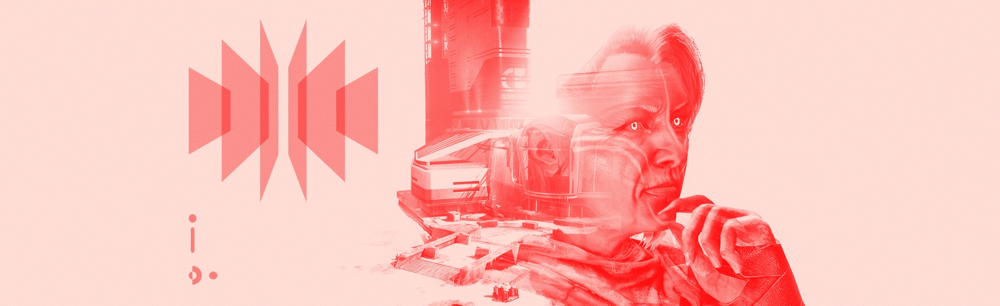

Tyra: "Ghost, open a new file. Research Notes TK-48725.8, Category: Clovis Bray.”
Ghost: “I don’t like it when you call me that.”
T: “What, ‘Ghost’? Oh, come now. We’ve been having this discussion for more than three centuries. Ghost is what you are, my friend. If you want a name so badly, choose one for yourself.”
G: “Maybe I will. Now that everyone’s gone back to the Tower and we’re still out here, I have plenty of time to consider what my name should be.”
T: “Can you open my file while you ponder the possibilities?”
G: “If you insist.”
T: “Thank you. Research Notes TK-48725.8. Data recovered from Freehold—Bray Landing. Kirren found an entire cache of intact data cores there. Brought them back just before the attack on the City."
T: “It’s these little miracles that intrigue me so much… Fragments of memories, frozen in silicon and quartz, trapped in a moment that survives the end of a civilization, centuries of decay, and the predations of invading armies, only to be recovered and end up as flotsam of a second war. That this cache even managed to survive the Collapse is a wonder, and then the Red War? The probabilities of such an occurrence are…”
G: “Tyra?”
T: “Yes, Ghost?”
G: “Ahem. You’re rambling. Again. You said I should remind you.”
T: “Thank you. As I was saying, this data was recovered more than six months ago but is just now being decrypted—2.6 exabytes of documents and schematics have been decoded so far. At first glance, most of this was just the detritus of Bray’s work: review notes, payment records, memos. I did find some very interesting notes on a propulsion system design that I’ve already sent to Amanda, and there are some messages between the sisters that will illuminate Master Melivander’s work on the history of Clovis Bray."
T: “But then I found something extraordinary. The records were fragmented—some files had been partially deleted—but there’s enough there to indicate that the Bray facility at Hellas Basin was larger than we previously thought.”
G: “Hellas Basin? The tourist spot?”
T: “The same. And while we know there was a BrayTech Futurescape there for promotional purposes— Bray even had an AI-led tour—all indications had been that if any research was done there, it was mostly for show: low-level projects creating improved cold-weather gear and the like."
T: “But if these records are correct, the facility operated on a far larger scale. It could have been the site of
the initial Warmind development. Perhaps even a core site for Rasputin itself. This could have been where the
Warmind was born.”
G: “You got all that from some fragmented files? Is this going to be like the time you thought you’d identified a
second Warmind? We spent a decade searching for Charlemagne’s vault.”
T: “I was correct about Charlemagne existing, just not about what it was. If we hadn’t done that research, we wouldn’t know anything about subminds.”
G: “Rahool still disagrees.”
T: “Rahool needs to get his head out of his engrams. This is why Guardians look for fragments of the Golden Age! We are the descendants of a lost civilization. Only by understanding what was can we understand what we are now. How the world we know came to be. And each artifact we find helps us interpret what we already know. Adds layers. New identities. We are experimenting in the laboratory of time, testing each observation through a crucible of evidence."
T: “Sometimes our conclusions change. And with each shift, we learn more of where we came from. The next shift in our perceptions? It may be on Mars.”